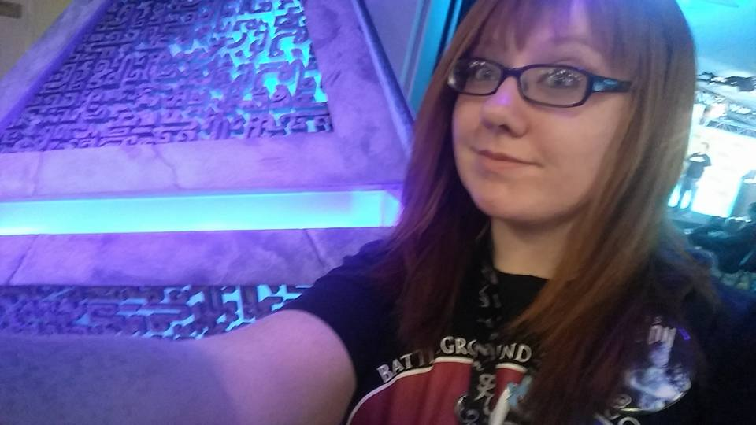
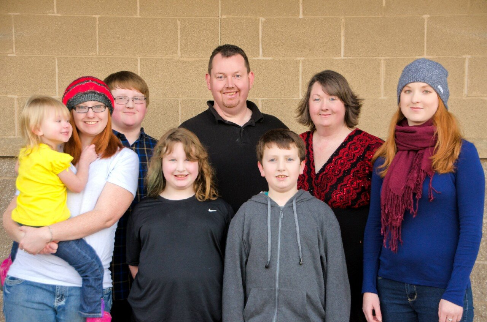
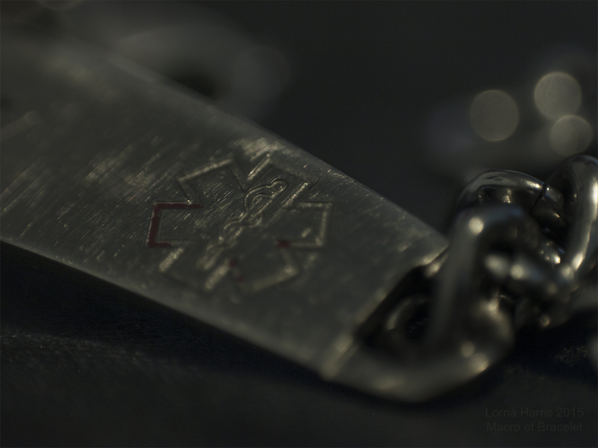
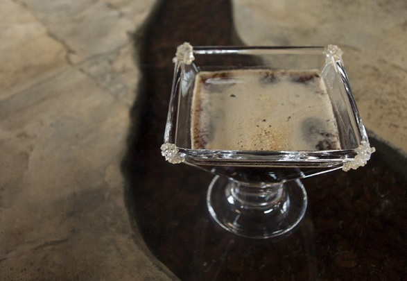

EWU Gamers Club President
I've been the EWU Gamers Club President for 2+ years so far! I am an avid gamer and lead with passion.

I Love My Family
My family has grown and grown over the years, even if some are not blood. I love and care for each of them deeply.

I have Epilepsy
I'm pretty open about my disabilities. I'd love to educate you sometime on it! But remember, I'm still a fully capable student, employee, and person.

Coffee Addiction
Though I've been told it's bad for you, I have a major addiction to coffee. I started drinking coffee when I was 12 and haven't stopped. It's so delicious!